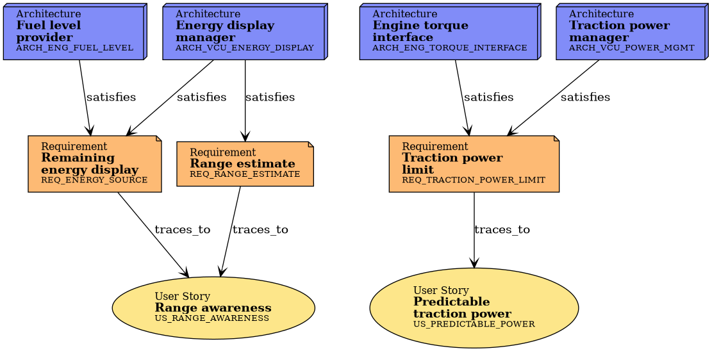

Reports¶
Traceability, coverage and BMS usage of this build’s product (truck_diesel_eu). Every table is evaluated per product: switching the product changes the rows without changing the sources.
Product and BMS version¶
Product: truck_diesel_eu (vehicle truck, powertrain diesel, market eu)
BMS release 0.1.0 (
third_party/bms/0.1.0/), cell chemistry (empty for diesel products: no BMS)
Vehicle requirements → architecture¶
Every vehicle requirement and the CV architecture elements (arch) and BMS
black boxes (bms_block) that satisfy it.
ID |
Title |
Type |
Satisfies |
|---|---|---|---|
Fuel level provider |
arch |
||
Engine torque interface |
arch |
||
Energy display manager |
arch |
||
Traction power manager |
arch |
Software requirements → code and tests¶
ID |
Title |
Type |
Implements |
Verifies |
|---|---|---|---|---|
Report filtered fuel level |
impl |
|||
Torque limit from the traction power limit |
impl |
|||
Show remaining energy (fuel level) |
impl |
|||
Apply traction power limit |
impl |
|||
Fuel level is the averaged sensor value |
test |
|||
Engine torque limit follows the power limit |
test |
|||
Remaining energy is rounded to percent |
test |
|||
Torque is limited by the power limit |
test |
BMS usage¶
BMS interface needs this product allocates, with the chemistry they are resolved for.
No needs passed the filters
Needflow: user story to BMS¶

Variant comparison¶
The comparison of the products (needs.json per product, side by side) is
part of the published site (plan 6), not of a single product build.